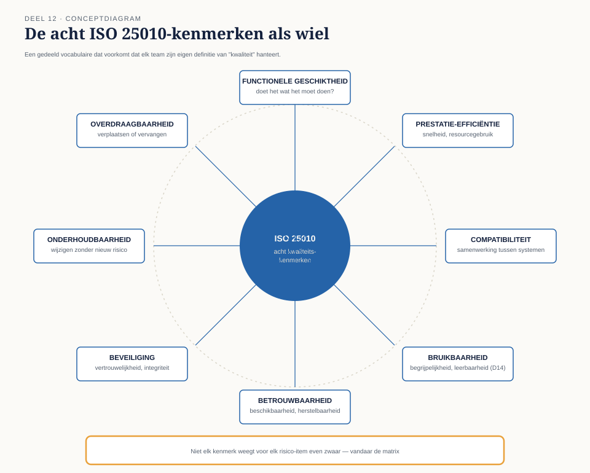
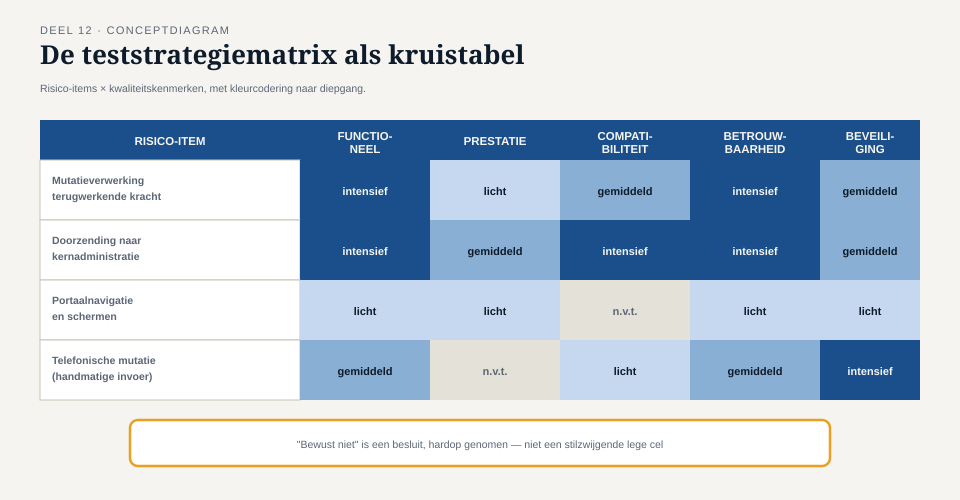

Deel 12 — Teststrategie op programmaschaal
Slidedeck · Ductus-cursus Testen en Kwaliteitsborging · niveau 2 · deel 12 van 30 · 17 slides
Slide 1 — Titel
Teststrategie op programmaschaal
Deel 12 · Niveau 2 Professional
Slide 2 — Statement
Vijf teams. Vijf lokale risicobeelden.
Nog geen programmarisicobeeld.
Slide 3 — Opdracht
Opdracht 12.1 — Vijf lokale beelden samenbrengen
Elk teamlid: jouw belangrijkste risico, vanuit je eigen team.
Wat ontbreekt als je alleen de som bekijkt?
20 minuten, groepjes van vijf.
Slide 4 — Statement
Vijf goed geteste onderdelen
vormen nog geen goed geteste keten.
Dit is T7 — nu structureel, op programmaschaal.
Slide 5 — Sectie
1. Kwaliteitskenmerken (ISO 25010)
Slide 6 — Figuur

Slide 7 — Opdracht
Opdracht 12.2 — Kwaliteitskenmerk toepassen
Vier bevindingen, welk kenmerk is primair in het geding?
15 minuten, individueel.
Slide 8 — Sectie
2. De teststrategiematrix
Slide 9 — Figuur

Slide 10 — Statement
Een lijst laat zien wát belangrijk is.
Een matrix laat zien waarín.
Slide 11 — Opdracht
Opdracht 12.3 — Bouw de teststrategiematrix
Vier risico-items, vijf kenmerken.
Onderbouw minstens twee "bewust niet"-cellen.
30 minuten, groepjes van drie.
Slide 12 — Sectie
3. Wat je bewust niet test
Slide 13 — Statement
"Wij testen dit niet" is een prima zin —
mits hardop uitgesproken door iemand
met het mandaat om dat te beslissen.
Slide 14 — Statement
Stilzwijgend "niet testen" is nooit een besluit.
Het is precies hoe T2 ontstond.
Slide 15 — Opdracht
Opdracht 12.4 — Wie beslist?
Drie "niet testen"-besluiten. Wie neemt ze, en waarom?
15 minuten, tweetallen.
Slide 16 — Bullets
TMAP-lens
- Matrix sluit aan bij business-driven testmanagement
- Geen eenmalig document — herzien bij elke programma-increment
- Onderdeel van de doorlopende VOICE-evaluatie
Slide 17 — Statement
Volgende keer: testanalyse gevorderd
Pairwise-technieken voor de combinatorische
explosie uit niveau 1, deel 5.